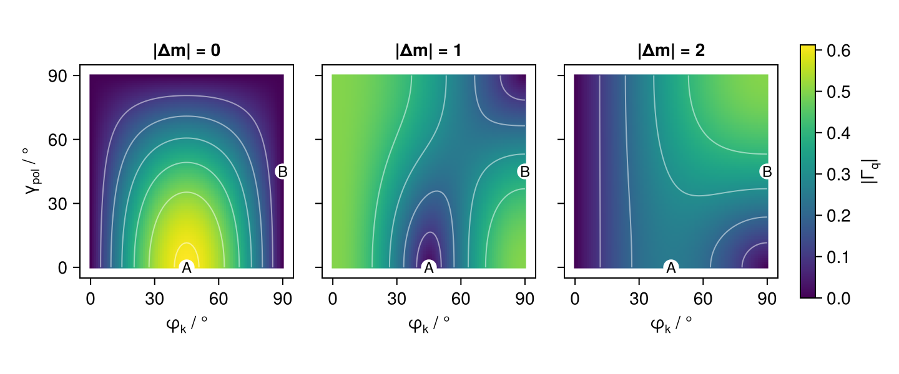
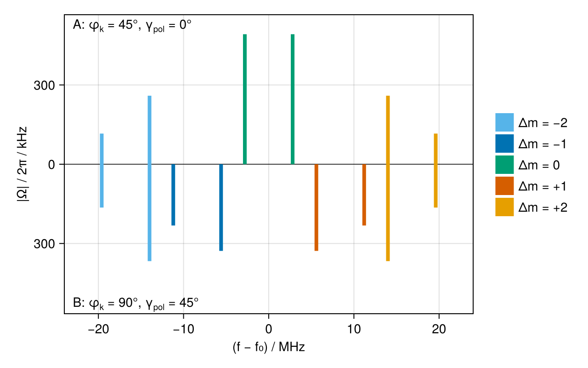

Beam geometry on the ⁴⁰Ca⁺ 729 nm transition
Which Zeeman components of an electric-quadrupole (E2) transition a laser drives, and how strongly, depends on both the propagation direction and the polarisation of the beam relative to the magnetic field (James 1998). For the S$_{1/2}$ ↔ D$_{5/2}$ transition of ⁴⁰Ca⁺ at 729 nm, we map the geometric factors out over all beam orientations, and turn them into Rabi frequencies for a concrete beam.
Geometric factors
beam_vectors(φ_k, γ_pol) returns the propagation direction and polarisation vector of a linearly polarised beam at angle $φ_k$ to the quantisation axis, with polarisation rotated by $γ_\mathrm{pol}$ out of the plane containing the beam and the field. quadrupole_geometry decomposes the resulting quadrupole coupling into the amplitudes $Γ_q$ of the $Δm = q$ channels. For linear polarisation, $|Γ_q| = |Γ_{-q}|$:
using CairoMakie
using Levels
using Unitful
function geometry(φ_k, γ_pol)
direction, ε = beam_vectors(deg2rad(φ_k), deg2rad(γ_pol))
abs.(quadrupole_geometry(ε, direction))
end
angles = 0:1:90
Γ = [geometry(φ_k, γ_pol)[q+3] for φ_k in angles, γ_pol in angles, q in 0:2]We mark two common choices: A, at 45° to the field and polarised in the plane, couples $Δm = 0$ most strongly; B, perpendicular to the field and polarised at 45° to it, suppresses $Δm = 0$ and drives the other eight components:
# Plot
A, B = (45, 0), (90, 45)
fig = Figure(; size=(720, 300))
for q in 0:2
ax = Axis(
fig[1, q+1];
title="|Δm| = $q",
xlabel=rich("φ", subscript("k"), " / °"),
ylabel=q == 0 ? rich("γ", subscript("pol"), " / °") : "",
xticks=0:30:90,
yticks=0:30:90,
aspect=1,
yticklabelsvisible=q == 0,
xgridvisible=false,
ygridvisible=false,
)
heatmap!(ax, angles, angles, Γ[:, :, q+1]; colorrange=(0, maximum(Γ)))
contour!(ax, angles, angles, Γ[:, :, q+1]; levels=0.1:0.1:0.6, color=(:white, 0.5))
for (label, (φ_k, γ_pol)) in (("A", A), ("B", B))
scatter!(ax, φ_k, γ_pol; color=:white, markersize=18)
text!(ax, φ_k, γ_pol; text=label, align=(:center, :center), fontsize=12)
end
limits!(ax, -5, 95, -5, 95)
end
Colorbar(fig[1, 4]; limits=(0, maximum(Γ)), label=rich("|Γ", subscript("q"), "|"))
fig
Rabi frequencies
With the beam geometry fixed, rabi_frequency combines the geometric factor with the Clebsch–Gordan coefficient of each Zeeman component and the strength of the transition, here for a beam of 10 mW focused to a waist of 20 µm (peak_intensity). At 0.5 mT, the ten components are spread over ±20 MHz:
s = Eigenstructure(ca40, "S_1/2", "D_5/2"; B=0.5u"mT")
f₀ = transition_frequency(ca40, "S_1/2" => "D_5/2")
I = peak_intensity(10u"mW", 20u"µm")
spectrum = map(state_pairs("S_1/2" => "D_5/2"; Δm=-2:2)) do pair
Δm = Int(pair.second.m - pair.first.m)
Ω = map((A, B)) do (φ_k, γ_pol)
direction, ε = beam_vectors(deg2rad(φ_k), deg2rad(γ_pol))
ustrip(u"kHz", abs(rabi_frequency(s, pair, I, ε, direction)) / (2π * u"rad"))
end
(; Δm, Δf=ustrip(u"MHz", cyclic(transition_frequency(s, pair) - f₀)), Ω)
endIn a "butterfly" plot, geometry A is drawn upwards and B downwards:
# Plot
Δm_colours = Makie.wong_colors()[[5, 1, 3, 6, 2]] # Δm = -2, …, 2
fig = Figure(; size=(640, 400))
ax = Axis(
fig[1, 1];
xlabel="(f − f₀) / MHz",
ylabel="|Ω| / 2π / kHz",
ytickformat=ys -> string.(round.(Int, abs.(ys))),
)
hlines!(ax, 0; color=:black, linewidth=0.75)
for (; Δm, Δf, Ω) in spectrum, (sign, Ωᵢ) in zip((1, -1), Ω)
Ωᵢ > 1 && lines!(ax, [Δf, Δf], [0, sign * Ωᵢ]; color=Δm_colours[Δm+3], linewidth=4)
end
Ω_max = 1.15maximum(maximum(l.Ω) for l in spectrum)
for (label, (φ_k, γ_pol), y) in (("A", A, 0.93Ω_max), ("B", B, -0.93Ω_max))
text = rich(
"$label: φ",
subscript("k"),
" = $(φ_k)°, γ",
subscript("pol"),
" = $(γ_pol)°",
)
text!(ax, -23, y; text, align=(:left, :center))
end
legend = [PolyElement(; color=Δm_colours[Δm+3]) for Δm in -2:2]
labels = ["Δm = −2", "Δm = −1", "Δm = 0", "Δm = +1", "Δm = +2"]
Legend(fig[1, 2], legend, labels; framevisible=false)
limits!(ax, -24, 24, -Ω_max, Ω_max)
fig
The geometry sets the weight of each $Δm$ group, and the Clebsch–Gordan coefficients the pattern within it: of the $Δm = ±2$ components, for instance, the stretched ones $|S, ±1/2⟩ ↔ |D, ±5/2⟩$ are the stronger by a factor of $\sqrt 5$.
Conversely, intensity_for_rabi gives the intensity needed for a given Rabi frequency. For a 10 µs π pulse on the stretched component in geometry B, the beam above needs:
direction, ε = beam_vectors(π / 2, π / 4)
stretched = StateSpec("S_1/2", -1 // 2) => StateSpec("D_5/2", -5 // 2)
I_π = intensity_for_rabi(s, stretched, π * u"rad" / 10u"µs", ε, direction)
round(u"mW", I_π * π * (20u"µm")^2 / 2; digits=3)0.186 mWThis page was generated using Literate.jl.